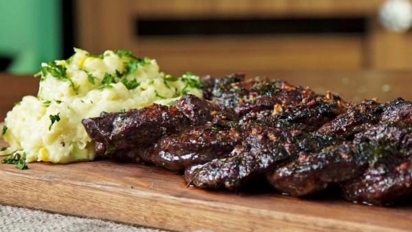

Carne asada a la marinada

Description
La receta consta de un buen trozo de carne marinado de 350 gr, degustado
con salsas picantes, con un buen pedazo de yuca y servido con un
delicioso jugo de masato boyacense.
La salsa esta compuesta de los mas diverso ingredientes tropicales, acompañado
de una ensalda exquisita con adimentos mas que comprobados. Esto
le dara una experiencia de sabor sin precedentes.
Ingredients
- Jugo de naranja
- Jugo de limon
- Salsa de soya
- Cilantro picado
- Ajos
- Pimenton
- Pimienta
- Oregano
- Oliva
Step by coking
- First, combinar los ingredientes como el jugo de naranja, de limon,
el cilantro, la salsa de soya, el aji y el pimenton, todo revuelto en
una cazuela.
-
Bañarlo en aceite de oliva y dejarlo reposando un buen rato, hasta
que este lista la carne.
-
Luego, sacar la carne y golpearla firmemente para que coja consistencia
y tenga textura suave.
-
Despues de machacar, cojer el bistec y pincharlo, entonces se deja
marinar con la mezcla por 24 horas.
-
Cuando este listo, precalentar la parrilla a fuego medio y luego, agregar
la carne marinada.
-
Cocinar el bistec al punto deseado, mas o menos 5 minutos por cada lado
para que quede jugoso.
-
Retirarlo de la parrilla, cortarlo en rodajas y agregarle salsas al gusto
y servir con acopañamiento.